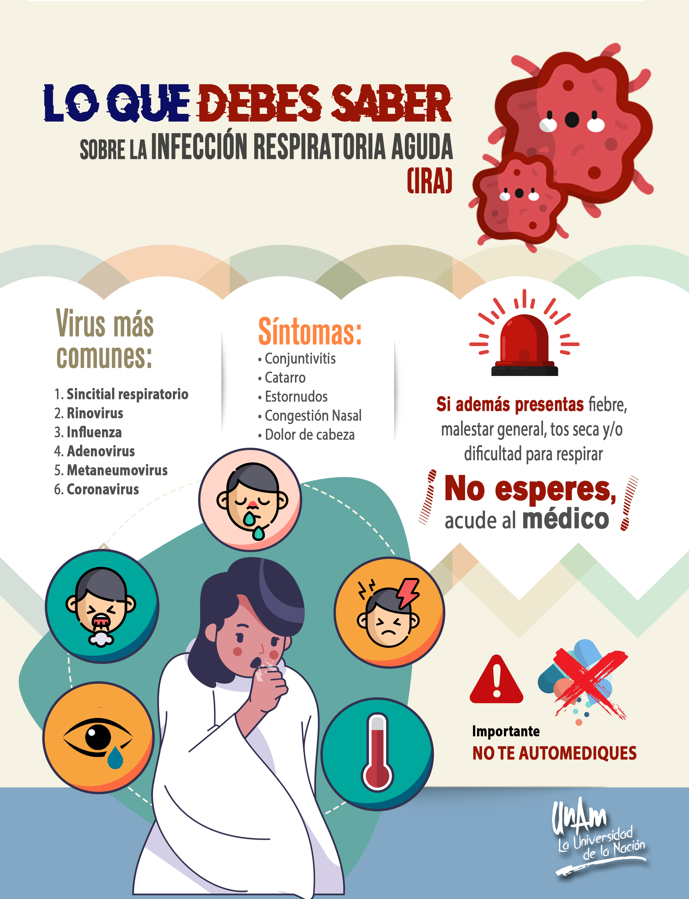

- Lávese las manos con frecuencia con un desinfectante de manos a base de alcohol o con agua y jabón.
- Al toser o estornudar, cúbrase la boca y la nariz con el codo flexionado o con un pañuelo; tire el pañuelo inmediatamente y lávese las manos con un desinfectante de manos a base de alcohol, o con agua y jabón.
- Mantenga al menos 1 metro (3 pies) de distancia entre usted y las demás personas, particularmente aquellas que tosan, estornuden y tengan fiebre.
- Evite tocarse los ojos y boca
- Si tiene fiebre, tos y dificultad para respirar, solicite atención médica a tiempo
- Indique a su prestador de atención de salud si ha viajado a una zona de China en la que se haya notificado la presencia del 2019-nCoV, o si ha tenido un contacto cercano con alguien que haya viajado desde China y tenga síntomas respiratorios.
- Manténgase informado y siga las recomendaciones de los profesionales sanitarios
- Permanezca en casa si empieza a encontrarse mal, aunque se trate de síntomas leves como cefalea y rinorrea leve, hasta que se recupere.
- Si tiene fiebre, tos y dificultad para respirar, busque rápidamente asesoramiento médico, ya que podría deberse a una infección respiratoria u otra afección grave. Llame con antelación e informe a su dispensador de atención de salud sobre cualquier viaje que haya realizado recientemente o cualquier contacto que haya mantenido con viajeros.

Inicio